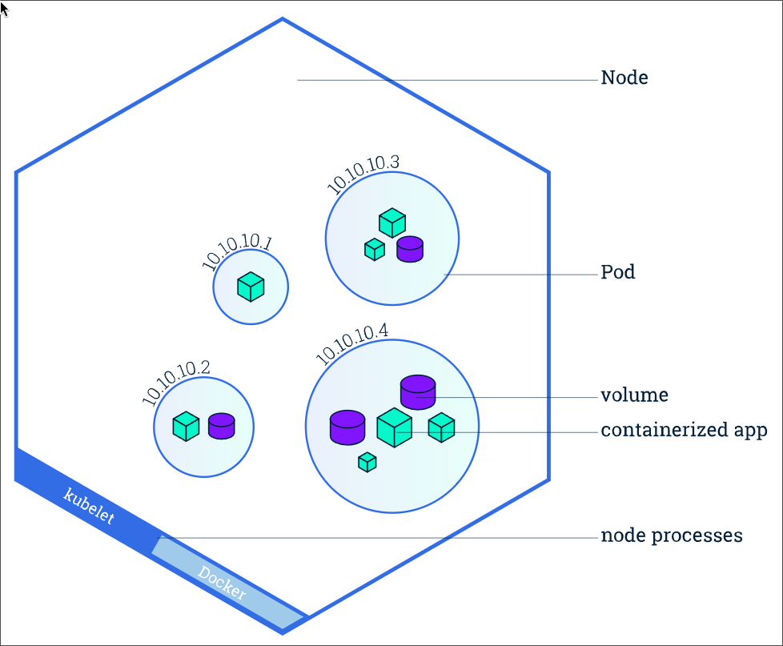

Introduction to Kubernetes?
If the Docker Engine fails, all containers running on that engine will go down, making them inaccessible to users.
This is where Kubernetes comes in — it manages multiple Docker Engines, known as Docker nodes, within a Kubernetes cluster. This setup ensures high availability and fault tolerance.
For example, if a container on the third node fails, Kubernetes automatically reschedules and migrates that container to a healthy node in the cluster.
🧠Container Orchestration
Container orchestration refers to managing the deployment, scaling, networking, and availability of containers across a cluster of Docker/worker nodes.
In Kubernetes, these nodes form a single pool of compute resources that is fault-tolerant and self-healing.
🔧 Popular Container Orchestration Tools
- Docker Swarm
- Kubernetes 🌟
- Mesosphere Marathon
- AWS ECS & EKS
- Azure Container Service
- Google Kubernetes Engine (GKE)
- CoreOS Fleet
- OpenShift
🚀 What Kubernetes Provides
-
Service Discovery & Load Balancing
Automatically exposes containers using DNS names or IPs and distributes traffic across them. -
Storage Orchestration
Mounts persistent storage from local disks or cloud providers like: - SAN (Storage Area Network)
- NAS (Network Attached Storage)
- AWS EBS volumes
-
Ceph
-
Automated Rollouts & Rollbacks
Gradually updates applications and rolls back if something goes wrong. -
Automatic Bin Packing
Places containers based on resource requirements and availability to maximize efficiency. -
Self-Healing
Automatically restarts failed containers, replaces unresponsive nodes, and kills misbehaving containers. -
Secrets & Configuration Management
Manages sensitive data like passwords, SSH keys, and environment variables securely and separately from your application code.
📊 Kubernetes Architecture
🎛 Components
🧠Master Component: Kube API Server
- Acts as the central communication hub for all Kubernetes components.
- Exposes the Kubernetes API, making it the frontend of the control plane.
- Handles all external and internal requests, including scheduling, deployments, and health checks.
- Admins interact with it via the
[kubectl](https://kubernetes.io/docs/reference/kubectl/)CLI or through automated systems. - A web-based dashboard can be integrated using the API.
- Enables integration with third-party tools and services like CI/CD, monitoring, and more.
💾 Master: etcd Server
- Stores all cluster data for the Kubernetes control plane.
- A consistent and highly available key-value store that serves as Kubernetes' backing store.
- The Kube API Server retrieves and writes data to etcd.
- It should be backed up regularly to ensure disaster recovery.
- Maintains the current state of all objects in the cluster (nodes, pods, configs, etc.).
📦 Master: Kube Scheduler
- Monitors newly created pods that do not yet have an assigned node.
- Selects the most suitable node for each pod to run on.
- Key factors considered during scheduling include:
- Resource requirements (CPU, memory)
- Hardware/software/policy constraints
- Affinity and anti-affinity rules
- Data locality
- Inter-workload interference
- Deadlines and priorities
🧩 Master: Controller Manager
Logically, each controller is a separate process.
However, to reduce complexity, they are all compiled into a single binary and run in a single process: the kube-controller-manager.
These controllers include:
-
Node Controller
Detects and responds when nodes become unresponsive or go offline. -
Replication Controller
Ensures the correct number of pod replicas are running for each replication controller object in the cluster. -
Endpoint Controller
Populates theEndpointsobject, connecting Services to their corresponding Pods. -
Service Account & Token Controller
Automatically creates default service accounts and API tokens for newly created namespaces.
🧱 Node Components
📌 Kubelet
- An agent that runs on every node in the cluster.
- Ensures that the containers described in the PodSpec are running and healthy.
- Communicates with the Kube API Server to receive instructions and report status.
🌐 Kube Proxy
- A network proxy that also runs on each node in the cluster.
- Maintains network rules on nodes, allowing:
- Communication between Pods within the cluster
- External access to Services from outside the cluster
- Handles TCP/UDP forwarding and supports virtual IPs via iptables or IPVS.
🔧 Container Runtime
- The software responsible for running containers on each node.
- Kubernetes supports multiple container runtimes via the Container Runtime Interface (CRI), including:
- Docker
- containerd
- CRI-O
- rktlet (now deprecated)
📦 PODS
(Reference: Imran Teli)

🧩 Addons
Kubernetes supports a variety of addons that extend its core functionality:
-
DNS
Provides name resolution for services and pods within the cluster. -
Web UI (Dashboard)
A web-based interface for managing and visualizing the cluster. -
Container Resource Monitoring
Tracks usage metrics like CPU, memory, and disk for containers. -
Cluster-Level Logging
Collects and stores logs from all cluster components for debugging and auditing.
⚙️ Kubernetes Setup Tools
ğŸ› ï¸ The Hard Way (Manual Setup)
- Full manual installation of Kubernetes components (used for learning and deep understanding).
- Requires setting up etcd, API server, controller manager, scheduler, kubelet, and kube-proxy manually.
🧪 Minikube
- Creates a single-node Kubernetes cluster on your local machine.
- Great for testing, development, and learning.
⚡ Kubeadm
- Tool to easily set up multi-node Kubernetes clusters.
- Platform-agnostic: works on VMs, EC2 instances, physical machines, and more.
- Handles essential steps like initializing the cluster and joining nodes.
☁️ Kops
- Used for deploying production-grade multi-node Kubernetes clusters on AWS.
- Supports HA (High Availability) setups, upgrades, and more.